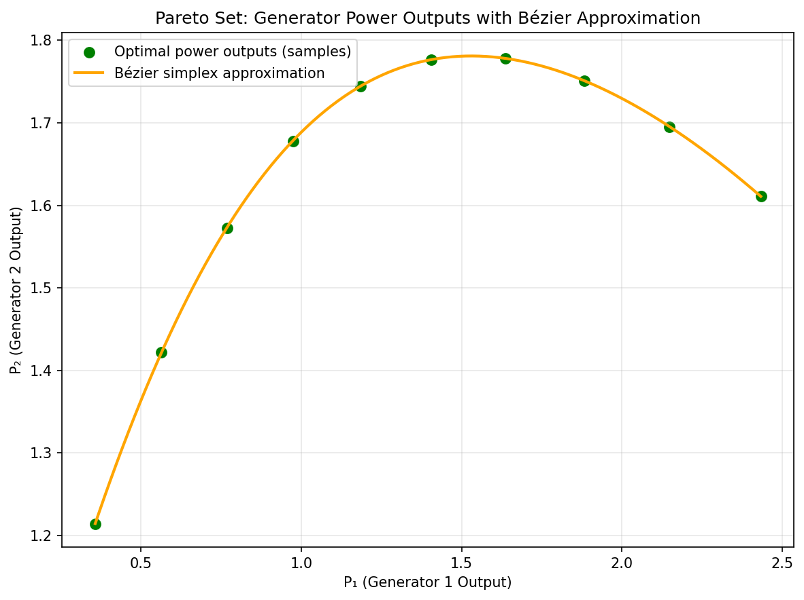
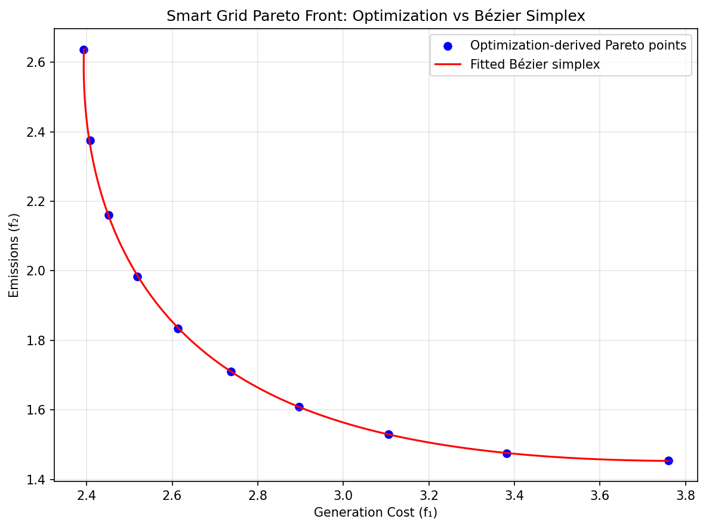

Distributed Smart Grids and Energy Operations
Modern power management systems face uniquely high-stakes trade-offs. The Multi-Objective Optimal Power Flow (MO-OPF) model mathematically formulates the challenges of simultaneously minimizing the economic costs of power generation, restricting environmental emission rates, and regulating line transmission losses or voltage deviations.
For traditional generators, the expected fuel and operating cost across an interconnected network is naturally modeled as a strongly convex quadratic function of power output \(P_i\):
Equally, in multi-agent microgrids integrating photovoltaic systems (PV), energy storage batteries, and Electric Vehicle (EV) charging stations, researchers utilize game-theoretic models to continuously distribute power allocations. To stabilize the energy demand across multiple EV chargers, the network actively minimizes the demand mismatch penalty against a target demand \(p_k^*\) [YYLM21]. Evaluated as an independent utility function for each node \(l\), this forms:
From a mathematical perspective, modifying the power allocations to maximize the utility \(u_l\) is mathematically identical to minimizing the positive-definite squared deviation between allocated and requested charge. Because the error metrics natively employ bounded quadratic structures (with the positive coefficient \(a_i > 0\)), the resulting system cost matrix is structurally strongly convex across the sub-groups.
Positive quadratic curvature can support efficient convex dispatch solvers. Convergence rates for a distributed method additionally depend on the constraints, coupling and algorithm settings. Convex generator costs alone do not make nonlinear AC power-flow constraints convex.
A fitted Bézier map can reduce the cost of exploring priorities for a fixed dispatch problem. Demand, weather and prices must be represented explicitly or held fixed; changing the priority weights does not update those inputs.
Numerical Experiments
We illustrate Bézier simplex fitting on a three-generator economic–emission dispatch problem balancing generation cost against emissions under a fixed demand.
Problem Setup:
Power outputs: \(P = [P_1, P_2, P_3] \in \mathbb{R}^3_{\ge 0}\), subject to the demand balance \(P_1 + P_2 + P_3 = D = 5\)
Generator 1 is cheap but dirty, generator 3 is expensive but clean.
Generation cost (strongly convex):
Emissions (strongly convex):
The demand constraint is what makes the objectives conflict: without it, both would be minimized by \(P = 0\).
Experiment Procedure:
Sample 10 weight vectors \(w = (w_1, w_2)\) on the 1-simplex from \((1,0)\) to \((0,1)\).
For each \(w\), solve \(P^*(w) = \arg\min_P [w_1 f_1(P) + w_2 f_2(P)]\) subject to the demand balance using SLSQP.
Collect the Pareto front points \((f_1(P^*(w)), f_2(P^*(w)))\).
Fit a degree-4 Bézier simplex to the weight–objective pairs and another to the weight–decision pairs.
Evaluate the fitted Bézier curve on 101 test weights.
The maximum error on the test weights is about \(0.003\), i.e., 0.2% of the range of \(f_1\). The Pareto set lies on the plane \(P_1 + P_2 + P_3 = 5\) and is shown by its projection onto \((P_1, P_2)\).
 |
 |
Pareto set. |
Pareto front. |


The complete example script is available at examples/generate_smart_grids_pareto.py.
What the plots and error measure
The left panel projects a three-output map to (P1, P2). Recovering the
third output from balance is possible for the reference solutions, but the
fit should still be checked in all three columns. The right panel describes
the corresponding cost and emissions. A close front fit does not prove that
a separately fitted generation vector satisfies balance or operating limits.
Reproduce the figures from the repository root with
python examples/generate_smart_grids_pareto.py after installing the plot,
SciPy and scikit-learn dependencies used by the script. It uses 10 training
weights and evaluates 101 weights. Distinguish training points from new
weights when interpreting the reported maximum error; also check each
objective rather than normalizing both by only the cost range.
For the decision surrogate, measure \(|\sum_i\widehat P_i-D|\) and \(\max(0,-\min_i\widehat P_i)\) across the evaluation set. If capacity bounds are added, inspect those too. Exact reference feasibility at sampled weights does not establish feasibility everywhere between them. Validate objective values by recomputing them from the predicted dispatch.
Demand variation and operating limits
The example keeps \(D=5\) fixed. For demand in a bounded interval,
normalize it to a second barycentric block and use a square of type
(1, 1): one factor for priorities and one for demand. Then a parameter
row can be [1-u, u, 1-v, v] with
\(D=(1-v)D_{\min}+vD_{\max}\). Each block sums to one independently.
The simploid figure illustrates this
independent-factor construction.
Capacity constraints can change which generators saturate as priorities or demand vary. Such transitions can create derivative changes in an otherwise continuous solution map. Add reference solves near them and compare held-out errors before increasing degree. Multiple local patches may be appropriate if a single polynomial needs too much capacity; their coordinate conventions and continuity requirements must then be explicit.
This experiment covers an economic-emission dispatch model. It does not include voltage constraints, line limits, AC network equations or a closed-loop grid controller. Those conditions belong in the reference problem and in the validation of any proposed extension. For fitting mechanics, see Quickstart and Single and assembled domains.